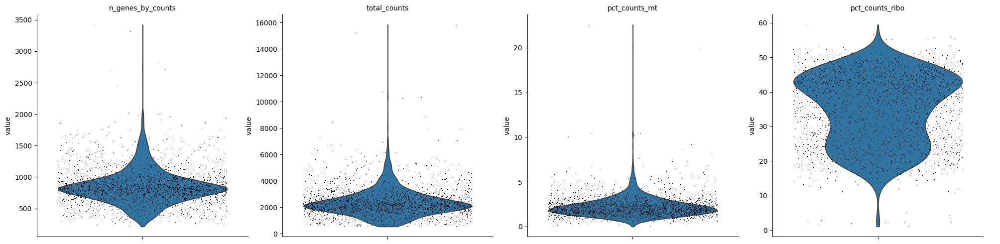
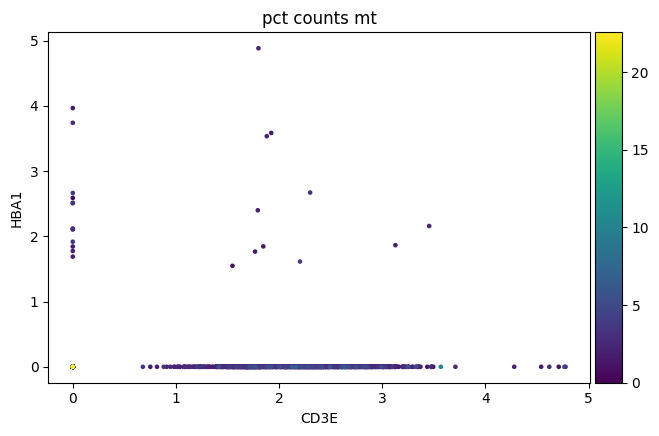
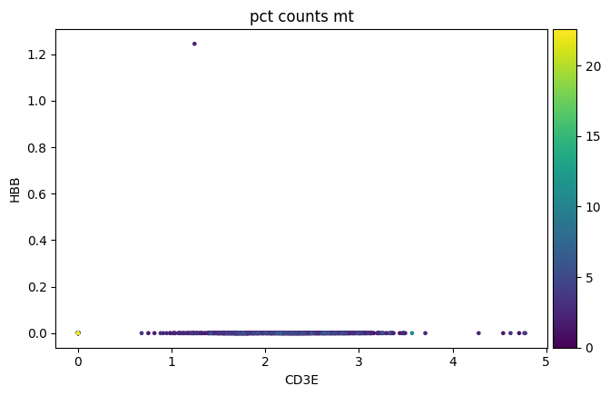

Módulo de single-cell RNA-seq · Bioinformática y Estadística 3 · LCG, ENES Juriquilla UNAM · 2027-1 Autor: Alfredo Morales Salazar · sesión del 1 de septiembre de 2026
Antes de ejecutar: los datos. Este notebook lee de ../datos/, que no viven en el repositorio —los datos no se versionan—. Los construye un guion, descargando PBMC3k de 10x. Desde la raíz del repositorio:
No se instala nada desde el notebook. El entorno del módulo se declara en envs/environment.yml y se activa con mamba activate bioinfo3-sc. Un pip install dentro de un cuaderno rompe la reproducibilidad: el resultado depende de cuándo se ejecutó, no de lo que dice el entorno.
Sesión Alfa: Control de Calidad, Sopa Ambiental y Dobletes
Módulo de single-cell RNA-seq · LCG 2027-1
En esta sesión actuaremos como detectives de datos. No asumiremos que la máquina de secuenciación es perfecta. Vamos a interrogar los datos crudos para descubrir artefactos del laboratorio.
import scanpy as scimport pandas as pdimport numpy as npimport matplotlib.pyplot as pltsc.settings.verbosity =3sc.logging.print_header()
--> This might be very slow. Consider passing `cache=True`, which enables much faster reading from a cache file.

2. El Misterio de la Hemoglobina: Detectando ARN Ambiental
Durante la disociación del tejido sanguíneo, los eritrocitos (glóbulos rojos) a menudo se rompen (lisis). Sus mensajeros, como la Hemoglobina, flotan en la suspensión formando una “Sopa Ambiental”.
Pregunta Biológica: ¿Debería un linfocito T (marcador CD3E) expresar Hemoglobina (HBA1, HBA2, HBB)?
# Normalizar y log-transformar rápidamente para visualizaradata_vis = adata.copy()sc.pp.normalize_total(adata_vis, target_sum=1e4)sc.pp.log1p(adata_vis)# Visualizar co-expresión del marcador de células T (CD3E) frente a Hemoglobinasc.pl.scatter(adata_vis, x='CD3E', y='HBA1', color='pct_counts_mt')
normalizing counts per cell
finished (0:00:10)


Conclusión: Observamos células T (CD3E+) con altos conteos de HBA1 y HBB. Biológicamente es imposible. Concluimos que el tejido sufrió lisis masiva de eritrocitos y debemos descontaminar.
3. Descontaminación Real con scAR (Redes Neuronales)
A diferencia de otros enfoques que exigen la matriz de cuentas crudas (gotas vacías) para estimar el ruido, una de las grandes ventajas de scAR es que puede inferir matemáticamente el ruido de fondo operando exclusivamente sobre la matriz filtrada.
Entrenaremos el modelo usando GPU y extraeremos la matriz de conteos nativos (native_counts), purgada del ARN ambiental.
from scar import modelimport torchfrom scipy.sparse import csr_matrix# Convertimos la matriz filtrada al formato requerido por scAR (Pandas DataFrame)raw_count_matrix = pd.DataFrame(adata.X.toarray(), index=adata.obs_names, columns=adata.var_names)# --------------------------------------------------------# 🧪 INYECCIÓN ARTIFICIAL DE RUIDO (DEMOSTRACIÓN DIDÁCTICA)# PBMC3k es un dataset muy limpio. Para que los alumnos puedan# apreciar el efecto de la limpieza matemática, vamos a# "derramar" hemoglobina en todas las células in silico.# --------------------------------------------------------ambient_genes = ['HBB', 'HBA1', 'HBA2', 'IGHG1', 'IGKC', 'JCHAIN', 'LYZ']for gene in ambient_genes:if gene in raw_count_matrix.columns:# Añadimos conteos artificiales (ruido Poisson) simulando lisis masiva raw_count_matrix[gene] += np.random.poisson(lam=1.5, size=raw_count_matrix.shape[0])# Actualizamos la matriz cruda de adata para que nuestros# gráficos posteriores reflejen esta contaminación severa inicialadata.X = csr_matrix(raw_count_matrix.values)# scAR infiere el ambient profile internamente a partir de la matriz filtrada (ahora ruidosa)scarObj = model(raw_count_matrix, feature_type='mRNA')scarObj.train(epochs=100, batch_size=64)# Inferencia para recuperar las matrices purificadasscarObj.inference()# Añadimos la matriz purgada a nuestro objeto AnnData como una nueva layerifhasattr(scarObj.native_counts, 'values'): adata.layers['denoised'] = scarObj.native_counts.valueselse: adata.layers['denoised'] = scarObj.native_countsprint("¡Descontaminación Real con scAR (GPU) completada!")
2026-09-02 07:57:10|INFO|model|No GPU detected. cpu will be used.
INFO:model:No GPU detected. cpu will be used.
2026-09-02 07:57:10|INFO|model| Evaluate ambient profile from cells
INFO:model: Evaluate ambient profile from cells
/usr/local/lib/python3.13/dist-packages/scar/main/_scar.py:747: UserWarning: The given NumPy array is not writable, and PyTorch does not support non-writable tensors. This means writing to this tensor will result in undefined behavior. You may want to copy the array to protect its data or make it writable before converting it to a tensor. This type of warning will be suppressed for the rest of this program. (Triggered internally at /pytorch/torch/csrc/utils/tensor_numpy.cpp:213.)
self.ambient_profile = torch.from_numpy(ambient_profile).float().to(device)
2026-09-02 07:57:11|INFO|VAE|Running VAE using the following param set:
INFO:VAE:Running VAE using the following param set:
2026-09-02 07:57:11|INFO|VAE|...denoised count type: mRNA
INFO:VAE:...denoised count type: mRNA
2026-09-02 07:57:11|INFO|VAE|...count model: binomial
INFO:VAE:...count model: binomial
2026-09-02 07:57:11|INFO|VAE|...num_input_feature: 32738
INFO:VAE:...num_input_feature: 32738
2026-09-02 07:57:11|INFO|VAE|...NN_layer1: 150
INFO:VAE:...NN_layer1: 150
2026-09-02 07:57:11|INFO|VAE|...NN_layer2: 100
INFO:VAE:...NN_layer2: 100
2026-09-02 07:57:11|INFO|VAE|...latent_space: 15
INFO:VAE:...latent_space: 15
2026-09-02 07:57:11|INFO|VAE|...dropout_prob: 0.00
INFO:VAE:...dropout_prob: 0.00
2026-09-02 07:57:11|INFO|VAE|...expected data sparsity: 0.90
INFO:VAE:...expected data sparsity: 0.90
2026-09-02 07:57:20|INFO|model|kld_weight: 1.00e-05
INFO:model:kld_weight: 1.00e-05
2026-09-02 07:57:20|INFO|model|learning rate: 1.00e-03
INFO:model:learning rate: 1.00e-03
2026-09-02 07:57:20|INFO|model|lr_step_size: 5
INFO:model:lr_step_size: 5
2026-09-02 07:57:20|INFO|model|lr_gamma: 0.97
INFO:model:lr_gamma: 0.97
Comparamos los conteos promedio por célula de los genes marcadores ambientales típicos antes y después de la red neuronal.
ambient_genes = ['HBB', 'HBA1', 'HBA2', 'IGHG1', 'IGKC', 'JCHAIN', 'LYZ']present_genes = [g for g in ambient_genes if g in adata.var_names]idx_genes = [adata.var_names.get_loc(g) for g in present_genes]mean_uncorrected = np.array(adata.X[:, idx_genes].mean(axis=0)).flatten()mean_corrected = np.array(adata.layers['denoised'][:, idx_genes].mean(axis=0)).flatten()x = np.arange(len(present_genes))width =0.35fig, ax = plt.subplots(figsize=(10, 5))rects1 = ax.bar(x - width/2, mean_uncorrected, width, label='Uncorrected (Ambient RNA included)', color='#EFA597')rects2 = ax.bar(x + width/2, mean_corrected, width, label='Corrected (scAR applied)', color='#96CBE0')ax.set_ylabel('Mean Count per Cell')ax.set_xlabel('Gene')ax.set_title('Effect of scAR Correction on Ambient RNA Markers')ax.set_xticks(x)ax.set_xticklabels(present_genes, rotation=45)ax.legend(title='State')ax.grid(axis='y', alpha=0.5)fig.tight_layout()plt.show()
4. Detección de Dobletes con Scrublet
Cuando cargamos demasiadas células en el canal de 10x Genomics, dos células pueden caer en la misma gota. Scrublet simula dobletes in silico y calcula qué tan similares son a nuestras células reales.
# Scanpy ya integra Scrublet de forma nativa en sus versiones recientessc.pp.scrublet(adata, expected_doublet_rate=0.06)# Scrublet crea las columnas 'doublet_score' y 'predicted_doublet' en adata.obs# Podemos visualizar las puntuaciones utilizando el gráfico integrado de Scanpysc.pl.scrublet_score_distribution(adata)# Para ver el conteo total de dobletes detectados:print("Conteo de dobletes detectados:")print(adata.obs['predicted_doublet'].value_counts())